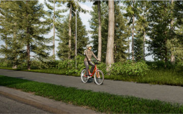
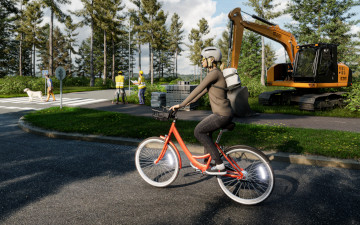

Ohjeita pyörällä liikkuvalle
- Tunne pyöräilijän
liikennesäännöt ja noudata niitä.
- Pyörällä liikkuessasi olet ajoneuvon kuljettaja.
- Kypärän käyttö on suositeltava.
- Ole läsnä ja pidä aistisi kohdistettuna liikenteeseen.
- Älä aja päihtyneenä.
Ohjeita pyörällä liikkuvalle
- Tee itsesi näkyväksi hämärällä ja pimeässä etu- ja takavalolla sekä heijastimilla.
- Maantiellä punainen takavalo on suositeltava myös päivällä.
- Aja pyörätiellä, jos sellainen on — ja pyörätietä voi käyttää sujuvasti ja turvallisesti.

Ohjeita pyörällä liikkuvalle
- Ota ajoradalla pyöräillessäsi oma tilasi.
- Älä aja kiinni oikeassa reunassa, jotta sinulla on tarvittaessa väistämistilaa.
- Erityisesti risteyksissä ja kapeilla kaduilla keskemmällä pyöräillessäsi näyt paremmin.
- Ohita pysäköidyt autot riittävän kaukaa.
Ohjeita pyörällä liikkuvalle
- Ota muut tienkäyttäjät huomioon ja ole kohtelias heitä kohtaan.
- Hidasta ennen jalankulkijoiden kohtaamista ja ohita heidät riittävän kaukaa.
- Käytä hyvissä ajoin soittokelloa, jos jalankulkija ei havaitse saapumistasi.
- Älä pyöräile jalkakäytävällä.
Ohjeita pyörällä liikkuvalle
- Hidasta ennen risteyksiä ja ole risteyksissä muutenkin tarkkana.
- Noudata selkeitä ja johdonmukaisia ajolinjoja.
- Varmista että reitti on vapaa.
- Osoita aikeesi hyvissä ajoin.
- Näytä kääntymismerkkiä (käsi sivulle) ja tarvittaessa hidastamismerkkiä (käsi ylös).
- Älä käänny yllättäen.
Ohjeita pyörällä liikkuvalle
- Aja maantiellä oikeassa laidassa.
- Anna ohittajille tarvittaessa tietä.
Ohjeita autolla liikkuvalle
- Hidasta vauhtia, kun lähestyt pyörällä kulkevaa.
- Muista, että pyörällä ei välttämättä voi ajaa ajoradan reunassa tai pientareella. Reunassa voi olla
irtosoraa, monttuja, huonoa asfalttia tai loskaa.
- Pyörällä liikkuvat ovat ajoneuvon kuljettajia ja saavat ajaa ajoradalla, jos pyörätietä ei ole, pyörätie
on vasemmalla puolella tai pyörätietä ei voi turvallisesti käyttää.
Ohjeita autolla liikkuvalle
- Ohita pyöräilijä vain vastaantulevan liikenteen salliessa.
- Jätä riittävästi tilaa ohittaessasi, maantiellä vähintään 2 metriä.
- Muista, että pyöräilijä voi yllättäen joutua tekemään sivuttaisliikkeitä.
Ohjeita autolla liikkuvalle
- Jätä pyörällä ajaville tilaa myös risteyksissä ja liikennevaloissa.
Ohjeita autolla liikkuvalle
- Voit nähdä liikenteessä pyöräilijöitä myös kaksi rinnan. Parijono näkyy muulle liikenteelle paremmin ja on
nopeampi ohittaa.

{kind=link}
{kind=link}
{kind=link}
{kind=link}
{kind=link}
{kind=link}
{kind=link}
{kind=link}
{kind=link}
{kind=link}